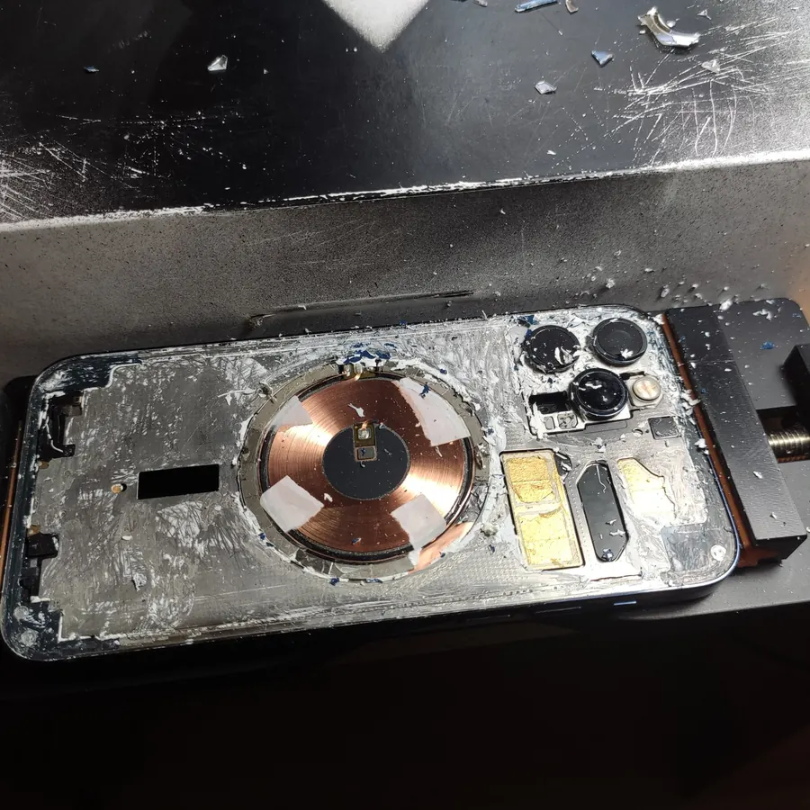
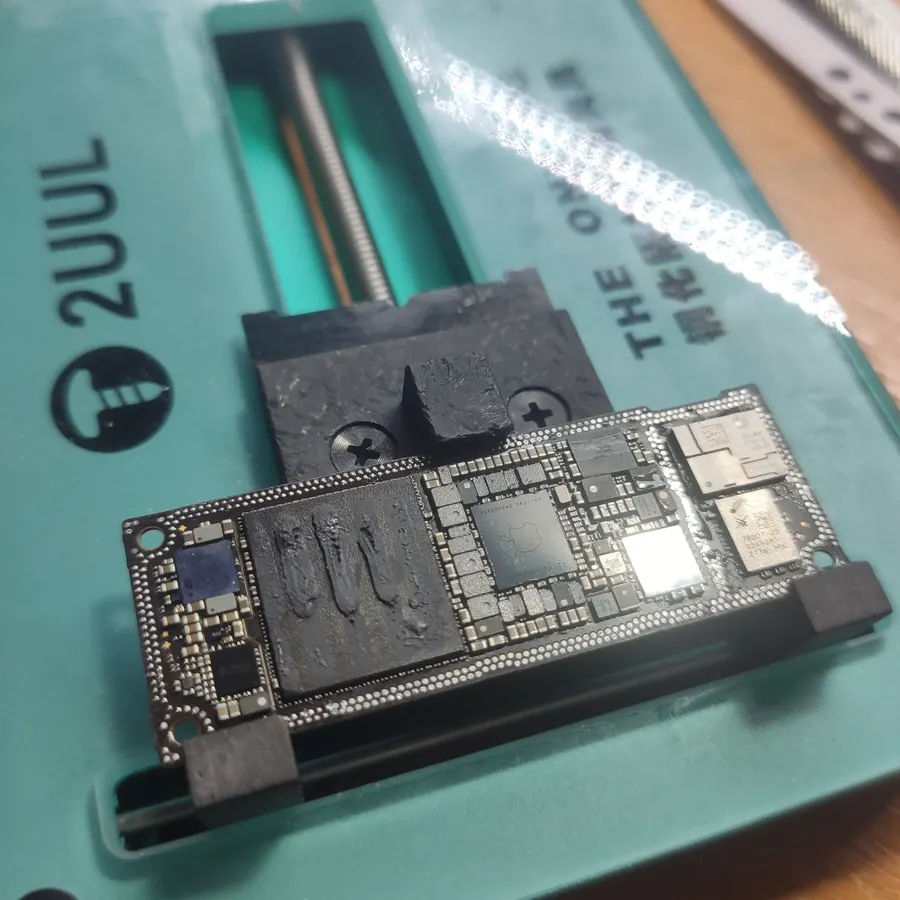

Ремонт iPhone в Мариуполе
Меняем дисплеи, аккумуляторы, задние стёкла и разъёмы на iPhone, чиним платы. Диагностика бесплатная, аккумулятор и разъём меняем в день обращения. Мастерская в ТЦ «Гудзон», ежедневно с 10:00 до 21:00.
Что чиним на iPhone
| Работа | Срок | Гарантия |
|---|---|---|
| Замена дисплея | 1–2 дня при наличии | 2–3 недели |
| Замена аккумулятора: с сообщением, без, усиленный | в тот же день | 1 месяц |
| Замена разъёма Lightning или шлейфа зарядки | 1–2 часа | — |
| Замена заднего стекла | 2–3 дня | — |
| Замена стекла камеры | 20–40 минут | — |
| Ремонт платы: нет сети, не видит SIM, нет звука | по результату диагностики | — |
| Восстановление после воды | 1–3 дня | без гарантии |
| Перенос данных со старого телефона | в тот же день | — |
Цену называем после бесплатной диагностики: она зависит от модели и от того, какая запчасть есть в наличии. Пришлите модель в Telegram — сориентируем сразу.
Аккумулятор: три варианта
На новых iPhone после замены батареи система может показывать сообщение о неоригинальном аккумуляторе и перестаёт выводить процент износа. Поэтому предлагаем три варианта: обычный аккумулятор с этим сообщением, вариант без сообщения и усиленный — с увеличенной ёмкостью. Какой подойдёт вашей модели, скажем по телефону, когда назовёте модель.
Если телефон выключается на 20–30 %, держит меньше дня или в настройках ёмкость ниже 80 %, батарею пора менять. Вздутый аккумулятор, который отжимает экран, меняем сразу: так он может повредить дисплей.
Подробно о замене батареи — в статье про аккумуляторы.
Заднее стекло
У iPhone начиная с восьмой серии задняя панель стеклянная и вклеена в корпус. Разбитое стекло снимаем целиком, очищаем корпус от остатков клея и ставим новое. На это уходит 2–3 дня. Камеры и плату при этом не трогаем.

Экран и плата
Для замены дисплея есть варианты по цене и качеству — в чём разница между ними, разбираем в статье про дисплеи. После установки проверяем сенсор, датчик приближения, фронтальную камеру и яркость.
Если iPhone не включается, не видит SIM или пропала сеть после падения, проблема часто в плате. Её ремонтируем под микроскопом: находим повреждённый элемент и меняем только его.

Как проходит ремонт
- Звоните или пишете в Telegram: модель и что случилось. Сразу говорим, сколько примерно займёт работа.
- Бесплатная диагностика — в мастерской или на месте при выезде. Если ремонт не нужен, ничего не платите.
- Называем точную цену до начала работ. Без доплат по ходу.
- Ремонтируем, проверяем вместе с вами и выдаём гарантию на работу.
Где нас найти
Мастерская: ТЦ «Гудзон», Ленинградский проспект (просп. Победы, 117), рядом с рынком «Солнечный». Ежедневно с 10:00 до 21:00. Можно вызвать мастера: по Левобережному району выезд бесплатный, в другие районы — стоимость по телефону.
Построить маршрут в Яндекс Картах →
Частые вопросы
Сколько стоит ремонт iPhone?
Зависит от модели и запчасти. Точную цену называем после бесплатной диагностики, до начала работ. Чтобы сориентироваться заранее, пришлите модель и описание поломки в Telegram.
Сколько ждать?
Аккумулятор и разъём — в день обращения, стекло камеры — 20–40 минут, дисплей — 1–2 дня при наличии, заднее стекло — 2–3 дня.
Какая гарантия?
На замену дисплея — 2–3 недели, на аккумулятор — 1 месяц. На ремонт после воды гарантия не даётся.
Можно не ехать в мастерскую?
Да, мастер приезжает на дом или в офис. По Левобережному району выезд бесплатный.
Ещё по теме: Замена аккумулятора · Замена дисплея · Разъём зарядки · Стекло камеры